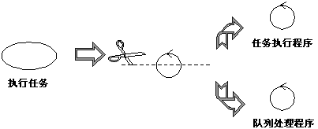
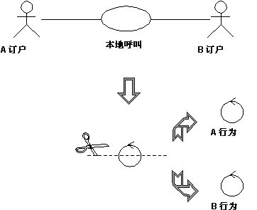

|
可将分析类定型为以下类之一：
除了在查找类时向您提供更具体的流程指导信息，该构造型还将形成强壮的对象模型，因为对模型的更改将仅影响特定区域。例如更改用户界面将仅影响边界类。更改控制流程将仅影响控制类。更改长期信息将仅影响实体类。但是，这些构造型特别有助于帮助您确定分析和早期设计中的类。您可能应考虑在后面的设计阶段中使用稍微不同的构造型集合，以更好地与实施环境和应用程序类型等相关联。
边界类是用来对系统环境及其内部工作之间的交互建模的类。 这样的交互涉及转换和转移事件，并注释系统表示中的更改（例如界面）。
边界类对依赖于环境的系统部件建模。实体类和控制类对不依赖系统环境的部件建模。因此，更改 GUI 或通信协议应表示仅更改边界类，而不是实体类和控制类。
使用边界类还能够更容易地理解系统，因为它们澄清了系统边界。它们通过提供用于识别相关服务的良好出发点，可以为设计提供帮助。例如，如果在设计早期识别了打印机接口，则很快就将明白还必须对打印输出格式建模。
常见的边界类包括窗口、通信协议、打印机接口、传感器和终端。不需要将例程接口部件（例如按钮）建模为单独的边界类。通常整个窗口是最细粒度的边界对象。边界类对于捕获可能的非对象定向 API 的接口（例如以前的代码）也是很有用的。
应按照各边界类所代表的边界类型，对边界类建模。与另一个系统通信和与人类参与者通信（通过用户界面）有着非常不同的目标。对于与人类参与者通信，最重要的问题是如何将界面展示给用户。对于与另一个系统通信，最重要的问题是通信协议。
边界对象（边界类的实例）可以比用例实例的生命期更长，例如，它必须显示在两个用例执行之间的屏幕上。但是通常，边界对象仅与用例实例的生命期一样长。
查找边界类
边界类在接口与系统外某些内容之间充当中介。边界对象将系统与环境中的更改（到其他系统的接口中的更改、用户需求中的更改等）隔离，使这些更改不会影响系统的其余部分。
系统可能有几种类型的边界类：
-
用户接口类 － 充当与系统中人类用户进行通信的中介的类
-
系统接口类 － 充当与其他系统进行通信的中介的类
-
设备接口类 － 提供到设备（用来检测外部事件，例如传感器）的接口的类
查找用户接口类
为每个用例参与者对定义一个边界类。可以将该类视为具有协调与参与者的交互的职责。可能还要定义附加的边界类，用来表示辅助类，主边界类将它的某些职责委托给辅助类。基于窗口的 GUI
应用程序尤其如此，在这种应用程序中可以为每个窗口建模一个边界类，或为每个表单建模一个。仅对系统的关键抽象建模；不要对 GUI 中的每个按钮、列表和窗口小部件建模。
分析的目标是形成对系统组成方式的良好了解，而不是设计每个最终细节。换句话说，仅为系统中的特殊现象或为分析用例实现的事件流程中提到的内容确定边界类。
制作草图或使用用户界面原型的屏幕转储，用于演示边界类的行为和外观。
查找系统接口类
与外部系统通信的边界类，负责管理与外部系统的对话；它为正在构建的系统提供了到该外部系统的接口。
示例
在自动柜员机中，必须通过 ATM 网络验证资金回撤，有一个参与者（然后对银行记帐系统验证回撤）。可以确定一个称为“ATM 网络接口”的对象以提供与 ATM 网络的通信。
可能已正确定义了到现有系统的接口；如果是这样，则应从接口定义中直接派生出各职责。如果存在正式的接口定义，可以对它进行反向设计且不需要在这里正式定义它；只需注意以下事实：在设计期间将重用现有接口。
查找设备接口类
系统可能包含充当外部元素的设备（自发地更改值而不受系统中任何对象的影响），例如传感器设备。虽然可以使用参与者来表示这种类型的外部设备，但是系统用户可能会发现这样做非常“混淆”，因为这样趋向于将设备和人类参与者放到同一“级别”上。然而，一旦不再收集需求，就需要考虑所有外部事件的来源并确保系统有办法检测到这些事件。
如果将设备表示为用例模型中的参与者，则可以很容易地证明使用边界类来充当设备和系统之间通信的中介是合理的。如果用例模型不包含这些“设备参与者”，则现在是添加它们的适当时机，并在适当时更新用例的补充描述。
对于每个“设备参与者”，创建一个边界类来获取设备或传感器的职责。 如果对该设备已存在良好定义的接口，则记下它供以后在设计期间引用。
控制类是用于对特定于一个或一些用例的控制行为建模的类。控制对象（控制类的实例）通常控制其他对象，因此它们的行为属于协调类型。控制类封装特定于用例的行为。
控制对象的行为与特定用例的实现密切相关。在许多场景中，甚至可以说控制对象“运行”分析用例实现。但是如果用例任务密切相关，某些控制对象可以参与多个分析用例实现。更进一步，不同控制类的若干控制对象可以参与到一个用例中。并非所有用例都需要控制对象。例如，如果用例中的事件流与一个实体对象相关，则边界对象可能在与实体对象的协作中实现用例。可以从为每个分析用例实现确定一个控制类开始，然后再随着确定更多分析用例实现并发现共同之处而优化它。
控制类可以帮助理解系统，因为它们代表系统的动态情况，处理主要任务和控制流。
系统执行用例时，创建控制对象。当控制对象对应的用例执行之后，通常该控制对象即结束。
注意控制类不处理用例中所要求的所有内容。它只是协调用于实施该功能的其他对象的任务。控制类将工作委派给已被分配该功能职责的对象。
查找控制类
控制类提供系统中的协调行为。系统可以执行一些没有控制对象的用例（仅使用实体和边界对象），特别是仅涉及简单的存储信息操作的用例。
更复杂的用例通常需要一个或多个控制类以协调系统中其他对象的行为。控制对象的示例包括诸如事务管理器、资源协调程序和错误处理程序之类的程序。
控制类有效地将边界和实体对象彼此分离，使系统更能容忍系统边界中的更改。它们还从实体对象分离出特定于用例的行为，使它们在用例和系统之间有更好的可重用性。
控制类提供如下行为：
-
不依赖于环境（环境更改时不更改），
-
定义用例中的控制逻辑（事件顺序）和事务。
-
在实体类的内部结构或行为发生变化的情况下甚少变化，
-
使用或设置几个实体类的内容，并因此需要协调这些实体类的行为。
-
每次激活时并不是以相同的方法执行（事件流有几个状态）。
确定是否需要控制类
用例的事件流定义了不同任务的执行顺序。从检查是否可以由已确定的边界类和实体类来处理流程开始。对于简单的事件流（主要是输入、检索和显示或修改信息），通常不必单独使用一个控制类；边界类将负责协调用例。
如果事件流较复杂，而且包含一些可能会独立于接口（边界类）或系统信息库（实体类）而变更的动态行为，则应该将该事件流封装在一个单独的控制类中。通过封装事件流，同一个控制类就可能由具有不同接口和信息库（或者至少底层数据结构不同）的各种系统重复使用。
示例：管理任务队列
可以从库处理系统中的用例“执行任务”中确定控制类。该控制类处理任务队列，确保以正确的顺序执行各任务。一旦分配了合适的传输设备，它就执行队列中的下一项任务。因此系统可以同时执行几项任务。
如果将相应的控制对象定义的行为分成两个控制类（任务执行程序和队列处理程序），会更容易描述该行为。队列处理程序对象将仅处理队列顺序以及传输设备的分配。整个队列需要一个队列处理程序对象。一旦系统执行了某项任务，它创建一个新的“任务执行程序”对象，该对象执行该任务。因此系统执行的每个任务都需要一个任务执行程序对象。

应按各组类似的职责来划分复杂的类
这种划分的主要好处在于：我们将队列处理职责（许多用例中都有的职责）从任务管理的特定任务（该用例所特有）中分离出来。
这样使类更容易理解并更易于随着设计的成熟而进行改编。这样还可以从平衡系统负载中受益，因为可以按需创建许多“任务执行程序”以处理工作负载。
在单独的控制类中封装主事件流以及可选／异常事件流
为简化更改，请在不同的控制类中封装主事件流和可选事件流。如果可选流和异常流是完全独立的，则将它们也分开封装。这将使系统更易于随时间推移而进行扩展和维护。
将共享同一控制类的两个参与者所在的控制类分开
当几个参与者使用同一控制类时，也需要分开控制类。通过执行此操作，将一个参与者的需求中的更改与系统的其余部分隔离。在更改成本很高或后果严重的情况中，应确定所有与多个参与者相关联的控制类并将它们分开。理想情况下，每个控制类应（通过某个边界对象）与一个参与者交互，或根本不与参与者交互。
示例：电话管理
考虑用例本地电话。最初，可以确定用于管理电话本身的控制类。

电话系统中处理本地电话呼叫的控制类可快速分成两个控制类：行为 A 和行为 B，所涉及的每个参与者有一个控制类。
在本地电话呼叫中，有两个参与者：发起呼叫的订户 A，以及接收呼叫的订户 B。订户 A 拿起听筒，听到拨号音，然后播电话号码，系统存储并分析该号码。当系统接收到整个号码之后，它发送振铃声给订户
A，并发送振铃信号给订户 B。订户 B 接听电话时，振铃声和信号停止，两个订户之间的对话开始。当两个订户挂断电话时，呼叫结束。
必须控制两种行为：订户 A 处发生的行为，订户 B 处发生的行为。所以，原控制对象分成两个控制对象，行为 A 和行为 B。
如果符合以下情况，则不需要拆分控制类：
-
可以有合理把握确信：与控制类的对象相关的参与者的行为永远不会更改，或更改量很少。
-
面向一个参与者的控制类对象的行为与其面向另一个参与者的行为相比很不重要，单个对象可以保留所有行为。以这种方法组合行为对可更改性的影响可忽略不计。
实体类是用来对必须存储的信息及关联行为建模的类。实体对象（实体类的实例）用来保存和更新关于某些特殊现象（例如事件、人员或某些现实对象）的信息。它们通常是持久的，长时间（有时是系统生命期）具有所需的属性和关系。
实体对象通常不特定于一个分析用例实现，有时实体对象甚至不特定于系统本身。其属性和关系的值通常由参与者给出。可能还需要实体对象来帮助执行内部系统任务。实体对象可以拥有和其他对象构造型同样复杂的行为。但是，与其他对象不同的是，该行为与实体对象所表示的特殊现象密切相关。实体对象与环境（参与者）无关。
实体对象代表正在开发的系统的关键概念。银行系统中实体类的典型示例是帐户和客户。在网络处理系统中，示例是节点和链接。
如果没有任何其他类使用您希望对之建模的特殊现象，则可以将它建模为实体类的属性，或甚至建模为实体类之间的关系。另一方面，如果在设计模型中有任何其他类使用特殊现象，则必须将它建模为一个类。
实体类提供了另一个理解系统的视点，因为它们显示了逻辑数据结构，可以帮助您理解系统应为用户提供的功能。
查找实体类
实体类代表系统中的信息存储；通常使用它们来表示系统管理的关键概念。实体对象通常是被动的和持久的。它们的主要职责是存储和管理系统中的信息。
通常实体类的构想来源于词汇表（在需求期间开发）和业务领域模型（如果已执行业务建模，则在业务建模期间开发）。
以下是允许的：
-
两个边界类之间的通信关联，例如用来描述一个特定窗口如何与其他边界对象相关。
-
从边界类到实体类的通信或预订关联，因为边界对象可能需要跟踪边界对象中的操作之间的某些实体对象，或得到实体对象中的状态更改的通知。
-
从边界类到控制类的通信关联，以便边界对象可以触发特定行为。
以下是允许的：
-
控制类和实体类之间的通信或预订关联，因为控制对象可能需要跟踪控制对象中的操作之间的某些实体对象，或得到实体对象中的状态更改的通知。
-
控制类和边界类之间的通信关联，允许向环境传达被调用行为的结果。
-
控制类之间的通信关联，允许构造更复杂的行为模式。
实体类只能是到其他实体类的关联（通信或预订）的源。实体类对象趋向于长生命期；控制类和边界类对象趋向于短生命期。从体系结构观点看，限制实体对象对其环境的可视性是明智的，这样系统将更易于更改。
从＼到
（可导航性）
|
边界
|
实体
|
控制
|
|
边界
|
通信
|
通信
预订
|
通信
|
|
实体
|
|
通信
预订
|
|
|
控制
|
通信
|
通信
预订
|
通信
|
有效关联构造型组合
-
确定新行为时，请检查是否有具有类似职责的现有类，尽可能地重用类。仅当确信没有能够执行该行为的现有对象时，才应创建新的类。
-
确定类时，检查它们以确保它们具有一致的职责。类的职责没有共同点时，将该对象拆成两个或多个类。相应地更新交互图。
-
如果因为发现无公共职责而分割类，请检查协作，在该协作中类扮演查看是否需要更新协作的角色。按需要更新协作。
-
本质上，只有一个职责的类不是问题，但应询问为何需要该类。 准备好接受提问并证明所有类存在的合理性。
|